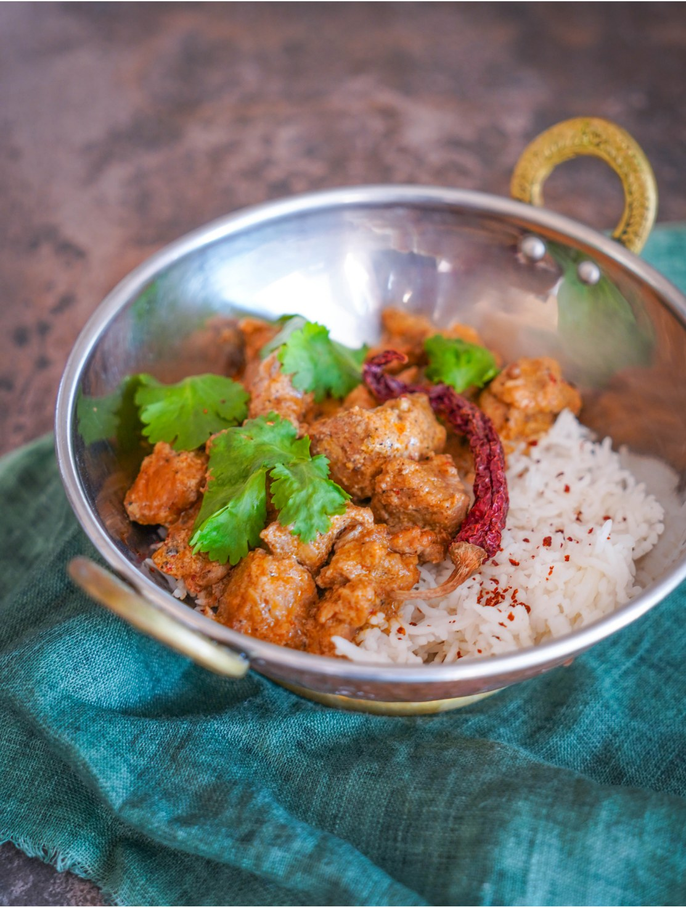

Индийская кухня — одна из моих любимых еще со времен учебы в Англии, где у меня было много друзей из Индии. Роган джош стало одним из первых блюд, которое я попробовала, и даже сейчас в любом индийском ресторане я всегда заказываю именно его.
Карри из баранины я обычно готовлю из лопатки или ноги. В классическом рецепте рекомендуется полностью очистить мясо от жира, но если его немного, я оставляю для сочности.
В роган джош добавляют асафетиду и ратан джот, особую специю, которую настаивают в горячем масле — в результате она придает этому карри характерный красный цвет. Я привожу упрощенный вариант рецепта, исключив экзотику. Тем не менее асафетиду я приобрести рекомендую, потому что при готовке она дает очень приятный вкус, что-то среднее между луком и чесноком, и ее можно использовать во множестве блюд индийской кухни.
В рецепте карри традиционно специи обжариваются в масле, а потом все там же тушится. Но если вас смущает то, что они потом будут попадаться в готовом блюде, можете обжарить их и переложить в специальный муслиновый мешочек, который добавите к мясу при тушении, а в конце сможете легко извлечь.
Соус из этого рецепта универсален. Он будет отлично сочетаться с курицей, говядиной, с креветками (тогда нужно готовить гораздо меньше по времени, не добавлять бульон, чтобы соус был густой, и класть креветки в уже готовый соус). Очень вкусным будет вегетарианский вариант с тыквой — только тыкву не нужно мариновать целую ночь, хватит и 1 часа. Вместо тыквы можно взять батат или использовать смесь овощей.
Бульон в блюде можно использовать куриный или из баранины.
Идеальный гарнир к этому карри — рассыпчатый отварной рис басмати.
для маринада: